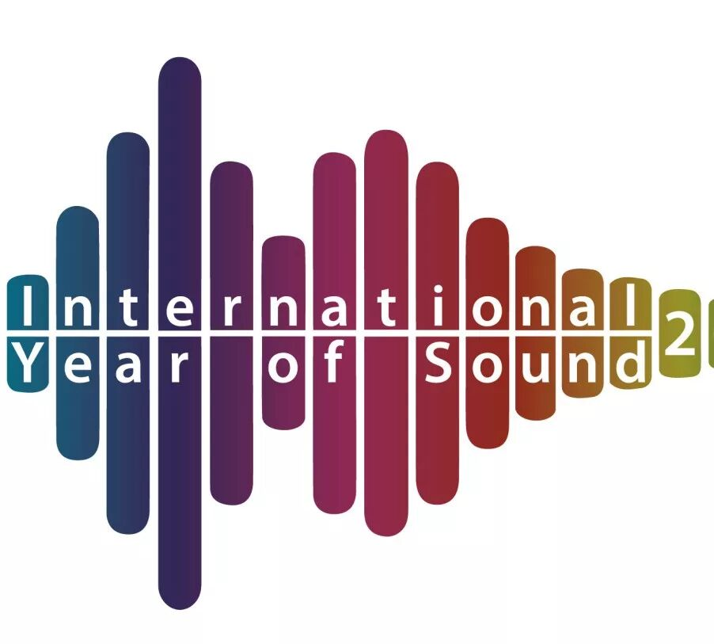
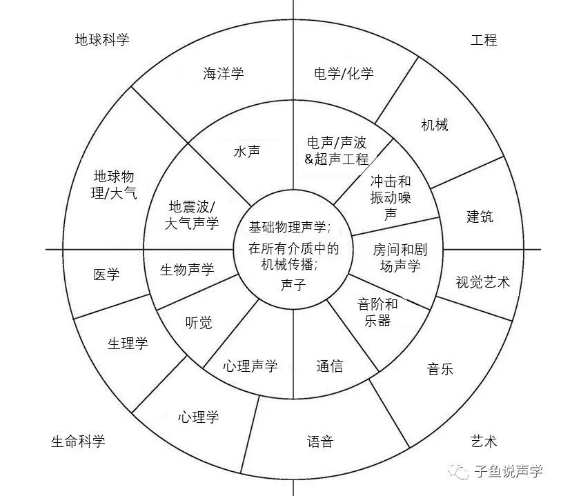
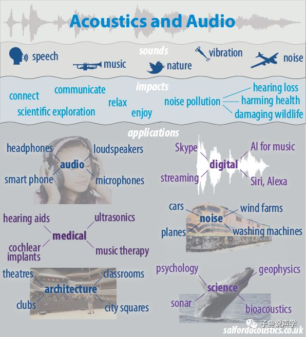
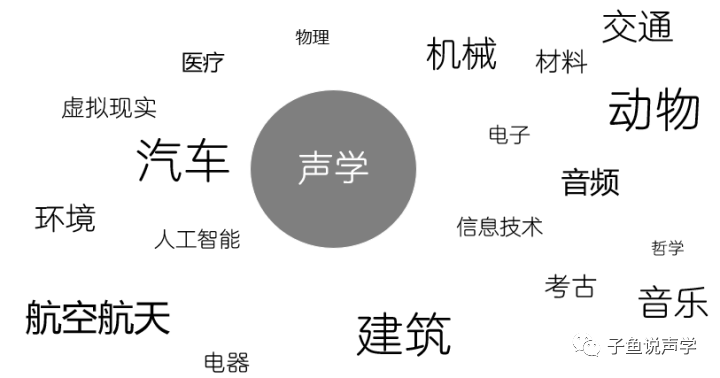
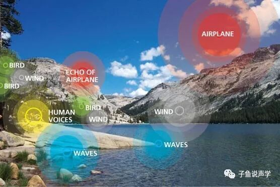
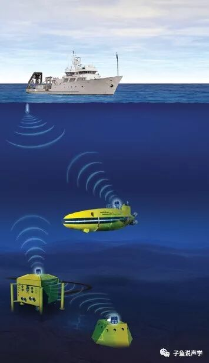

什么是声学？
——你是干什么的？
——我是做声学的。
——啊，生学啊。妇产科的？哦哦，声音的声啊，玩音乐的？卖音响的？
——不是，我……
此处省略号代表一个声学从业者的内心独白。
声学科普做了也已经一年多，值此2020声学之年，觉得很有必要把最基本的东西单拎出来聊聊。今天我们来谈两个问题：
什么是声学；声学是干什么的。


什么是声学？
声学的英文Acoustics，来源于希腊语ακούειν，意为“听”[1]。维基百科上的定义为：
声学为物理学分支，涉及机械波在气体、液体和固体中的研究，包含的课题有振动、声音、超声和次声。
个人觉得这个定义过于严肃，而且略显片面。接下来我们就开始用大白话，穿插着幽默的诙谐，来看看声学到底是个什么玩意。

声学是声音的科学。也就是说，一切和声音有关的事物，都在声学研究的范围内。从各种东西发出声音，经过不同的东西传播，被能听见声音的器官，比如耳朵，接收并感知到，这一系列过程的每一个环节都和声学相关。
听觉是动物赖以生存的重要因素，而说话又是人类发展和建立文化的关键。因此，声学科学广泛分布于人类活动和人类社会的各个方面，比如音乐、医疗、建筑、工业、环境甚至战争等。不仅在人世间，兽类之间也通过声学活动来进行他们生命中必不可少的活动，比如求偶、群殴等等。
我们看一下，在我写这篇文章的过程，都涉及到哪些方面的声学：
打开电脑，打开spotify放歌
—— 各种乐器手弹奏，歌手演唱，通过录音设备留下声音；声音文件通过spotify软件，被我的音响播放；播放出来的声音一部分直接进到我的耳朵，而另一部分经过我房间的各种反射才能进到耳朵；房间的地板下面铺有吸声材料，沙发和窗帘材料也在扮演吸声好手，这些都会影响我听到的声音；
—— 涉及到：乐器、音乐、录音（麦克风、前段放大器、数采）、音频工程、音响工程、房间声学、声学吸声材料；
敲打键盘
—— 键盘发出的声音也是经过设计，你会发现苹果的键盘和联想的并不一样，和机械键盘又不一样；
—— 涉及到：机械、声学设计、工业设计；
写了一会，走到窗边，打开窗户透透气
—— 窗户打开后，马上就能听到大街上的各种交通工具的声音，街上有各种汽车，每种汽车的引擎声和经过声音都不尽相同；
—— 涉及到：环境噪声、建筑声学、汽车声学；
掏出手机，跟朋友发几条语音
—— 对着话筒说话，用Bose耳机听朋友回复。不想听语音，把语音转文字；
—— 涉及到：麦克风技术、DSP、主动降噪、声音压缩、语音识别；
说实话，不写出来我也没发现短短的几个活动就可以涉猎到这么多领域。这就是声学的特点，交叉性极强。
著名的“声学之轮”了解一下。

很少有基础理论学科能做到声学交叉性这么强 [https://acoustics.byu.edu/content/what-acoustics]
声学是干什么的？
萨尔福德大学声学网站上有一张图

我原来科普讲座里面也大概整理过涉及到的领域：

美国声学协会ASA（Acoustical Society of America）对声学领域的进行了如下分支：
气动声学（Aeroacoustics）：关注声音/噪声如何通过气体流动产生以及传播，比如噪声怎样通过航天器和风车产生，以及吹奏乐器如何发声等等。
风车旋转过程的湍流仿真
音频信号处理（Audio signal processing）：设计范围比较广，比如
- 模拟声音信号处理，涉及到电气工程；
- 声音增强，比如在混响比较强的空间中；
- 去噪，比如Skype的回声消除或者助听器的去噪降噪；
- 音频文件压缩，比如大名鼎鼎的MP3；
- 声音信号识别，比如摇一摇搜歌。
建筑声学（Architectural acoustics）：我之前详细介绍过建筑声学发展史，这里不做过多介绍。
声学发展史之——建筑声学 (Architectural Acoustics)
生物声学（Bioacoustics）：主要研究动物间声音的产生和听觉。包括声音交流和动物行为和种类进化的关系，动物的听力原理和神经生理学，利用声音来监督动物种群，人为噪声对动物的影像等等。我在AI声学这篇文章里面也介绍了人工智能如何应用在生物声学
电声学（Electroacoustics）：涉及到耳机、麦克风、音响等声音系统的声音重建、录制和设计。电声随着手机等便携式电子设备的兴起而迅猛发展，HiFi爱好者对其也有很大推动。大部分相关的电子企业都有电声方面的研究。
环境声学（Environmental Acoustics）：控制环境中交通、飞机、工业设备、娱乐活动等产生的振动和噪声。声学从业者需要能够定量检测噪声，并且提出解决方案。很多声学咨询都可以提供相关服务，国内外在环境声学领域都有很多人在做。由于和人的健康息息相关，环境噪声对人的影响越来越大，也因此更受重视。声景（Soundscape）是环境声学衍生出来的新宠，不止关注与噪声，也关注如何积极地利用声音，为人服务。更多声景的知识可以参考康健老师的书[4]。

https://www.nps.gov/yose/learn/nature/soundscape.htm
音乐声学（Musical Acoustics）：致力于研究音乐的物理特性和感知。主要包括乐器和电子合成器的功能和设计，人类的嗓音研究，电脑分析音乐和合成（原来有个同事在芬兰学的computational music），医用的音乐理疗等等。
Autotune救了多少歌手的车祸现场？
噪声控制（Noise Control）：顾名思义，关注怎样降低噪声，可从三个领域降噪：噪声源、传播途径和接受者（比如戴耳塞）。噪声控制里面包含一个重要的工业应用分支：NVH（noise, vibration, and harshness），在汽车领域扮演者极为重要的角色。继N和V之后，H也逐渐被重视起来，这就不得不谈心理声学。
心理声学（Psychoacoustics）：声学和心理学的结合，是声学领域的新贵。人脑这个黑箱，给声学带来了无尽不确定性以及挑战。在原来的文章也长篇大论过，不在这里展开。
声学发展史之——心理声学(Psychoacoustics) · 上
声学发展史之——心理声学(Psychoacoustics) · 下
语音（Speech）：包括语音的产生、处理和感知，涉及到物理、生理、心理、语音信号处理和语言学。在人工智能/机器学习中，语音识别和语义分析是两大重要课题。如何让语音清晰、高效、高质量的被传递和接受是现在语音交互中的难点。我在上面提到的人工智能声学那篇文章也有提过。
超声（Ultrasonics）：虽然频率太高，人类听不见，但是在医疗领域应用广泛，其他领域还包括无损监测、水声等。
水声（Underwater Acoustics）：说了半天水上的，终于来了个水下的。经典的水声研究就是水下声源定位，在军事上广泛应用。除了人类活动之外，水声也和生物声学交叉，面向水下动物。

http://www.sercel.com/products/Pages/mats3g.aspx
振动和动力（Vibration and Dynamics）：研究机械系统的振动，比如铁轨的地面振动、建筑物的隔振（消声室）、人类振动（手-手臂振动症候群）、桥梁防震、建筑中结构声等等。
除了ASA提到的这些分类，我个人觉得还有几个分需要以补充（部分和上边提到的有重叠）：
医疗声学、材料声学、虚拟声学。
虚拟声学这块我写过关于Auralization的发展史：
最后来看看声学从业者们现身说法：
https://exploresound.org/meet-acousticians/
欢迎声学同行们补充、提意见和建议。
最后希望疫情早日退去，生活尽快恢复正常，小伙伴们健康平安！
在家没事的时候看看声学科普也不错 ^^
封面来源于：
https://www.gyptone.com/benefits-acoustics/
参考
[1] Turner, J., & Pretlove, A. J. (1991).Acoustics for engineers. Macmillan International Higher Education.
[2] http://salfordacoustics.co.uk/
[3] https://exploresound.org/
[4] Kang, J., & Schulte-Fortkamp, B. (Eds.). (2016).Soundscape and the built environment(pp. 161-195). Boca Raton, FL, USA:: CRC press.
[5] https://en.wikipedia.org/wiki/Acoustical_engineering#Acoustic_Engineer_.28Professional.29
往期文章精选：
科普知识系列：
罗曼蒂克的私语走廊（whispering gallery）：这不是一篇纽约游记，这是一篇声学科普
声学发展史系列：
声学发展史之——心理声学(Psychoacoustics) · 上
声学发展史之——心理声学(Psychoacoustics) · 下
声学发展史之——声音可视化 (Sound Visualization) · 上
声学发展史之——声音可视化 (Sound Visualization) · 下
声学发展史之——建筑声学 (Architectural Acoustics)
声学专业系列：
扫码关注我们
转载请联系作者
知乎专栏/今日头条：
子鱼说声学
点“在看”给我一朵小黄花
作者: 子鱼FM
发布时间: 2026-01-06 18:16:28
原文链接: https://mp.weixin.qq.com/s/rXofbM3X83wUHI3KCknrTw